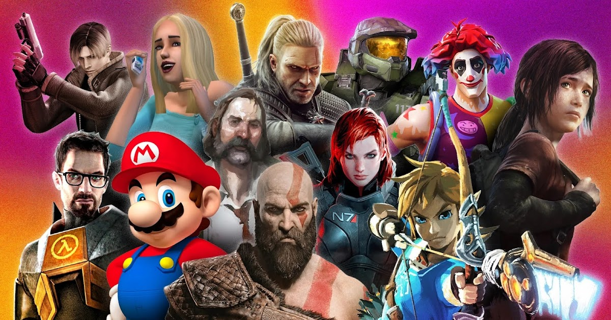

Uma jornada pelos maiores clássicos da história dos games
Listamos os 10 jogos mais icônicos que marcaram gerações, com base em crítica, inovação e impacto cultural:
Lançado em 1998 para o Nintendo 64, este jogo revolucionou os jogos em 3D com sua mecânica de travamento de mira, narrativa épica e trilha sonora memorável.
Um marco do NES, trouxe fases criativas, power-ups icônicos como a roupa de guaxinim e elevou o padrão de jogos de plataforma.
Um RPG moderno com um vasto mundo aberto, narrativas profundas e escolhas morais que realmente afetam o desfecho da história.
Um clássico do Super Nintendo com viagem no tempo, múltiplos finais e um elenco inesquecível. Desenvolvido por um “dream team” de criadores.
Da Rockstar Games, é um épico cinematográfico no Velho Oeste, com atenção a detalhes, paisagens deslumbrantes e narrativa envolvente.
Combina ação e física realista com uma história envolvente. Influenciou dezenas de jogos FPS após seu lançamento em 2004.
Simples e viciante. Tetris é um fenômeno global desde os anos 80, sendo jogado até hoje em diferentes plataformas.
O jogo mais vendido da história. Com gráficos simples, mas infinitas possibilidades de criação, educação e aventura.
Conhecido por sua dificuldade, lore enigmática e combates técnicos. Criou um gênero próprio: os “soulslike”.
Introduziu muitos jogadores ocidentais ao mundo dos JRPGs. Personagens como Cloud e Sephiroth são ícones da cultura gamer.